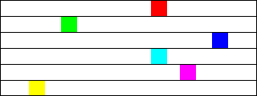

Solution for Programming Exercise 3.9
This page contains a sample solution to one of the exercises from Introduction to Programming Using Java.
Exercise 3.9:
Often, some element of an animation repeats over and over, every so many frames. Sometimes, the repetition is "cyclic," meaning that at the end it jumps back to the start. Sometimes the repetition is "oscillating," like a back-and-forth motion where the second half is the same as the first half played in reverse.
Write an animation that demonstrates both cyclic and oscillating motions at various speeds. For cyclic motion, you can use a square that moves across the drawing area, then jumps back to the start, and then repeats the same motion over and over. For oscillating motion, you can do something similar, but the square should move back and forth between the two edges of the drawing area; that is, it moves left-to-right during the first half of the animation and then backwards from right-to-left during the second half. To write the program, you can start with a copy of the sample program SimpleAnimationStarter.java.
A cyclic motion has to repeat every N frames for some value of N. What you draw in some frame of the animation depends on the frameNumber. The frameNumber just keeps increasing forever. To implement cyclic motion, what you really want is a "cyclic frame number" that takes on the values 0, 1, 2, ..., (N-1), 0, 1, 2, ..., (N-1), 0, 1, 2, .... You can derive the value that you need from frameNumber simply by saying
cyclicFrameNumber = frameNumber % N;
Then, you just have to base what you draw on cyclicFrameNumber instead of on frameNumber. Similarly, for an oscillating animation, you need an "oscillation frame number" that takes on the values 0, 1, 2, ... (N-1), N, (N-1), (N-2), ... 2, 1, 0, 1, 2, and so on, repeating the back and forth motion forever. You can compute the value that you need with
oscilationFrameNumber = frameNumber % (2*N); if (oscillationFrameNumber > N) oscillationFrameNumber = (2*N) - oscillationFrameNumber;
Here is a screen shot from my version of the program. I use six squares. The top three do cyclic motion at various speeds, while the bottom three do oscillating motion. I drew black lines across the drawing area to separate the squares and to give them "channels" to move in.

This exercise exists mostly to introduce you to cyclic and oscillating motion and the formulas that are used to implement them. But it's also a good exercise in designing an animation and working with coordinates.
Some decisions have to be made before you can start writing code. I decided to use rather small squares. (Actually, I tried it with big squares and didn't like the appearance as much.) The size of my squares is 20-by-20 pixels. For my first cyclic motion, I decided to make the length of the frame 300 frames, or about 5 seconds. This means that cyclicFrameNumber can be computed as frameNumber % 300. And I decided to move the square at one pixel per frame; that lets me use cyclicFrameNumber as the x-coordinate for the square. The top square moves along the top edge of the window, so its y-coordinate is 0. The code for the first square is:
cyclicFrameNum = frameNumber % 300; // Repeats every 300 frames g.setFill(Color.RED); g.fillRect( cyclicFrameNum, 0, 20, 20 );
The exercise asks for cyclic motion at different speeds. If the second square is to be faster than the first, it should cross the drawing area in a smaller number of frames. If it is twice as fast, it will only need half as many frames to make it across the drawing area. For the second square, I use a cycle length of 150 instead of 300. To cross the entire area, the x-coordinate of the square must get to 300 after just 150 frames. We can accomplish that by using 2*cyclicFrameNumber as the x-coord. (Another way to think about it: A square with x-coord 2*cyclicFrameNumber moves twice as fast as one with x-coord cyclicFrameNumber. And it will finish the journey after 150 frames instead of 300, so the length of the cycle should be 150 frames.) The code for the second square is
cyclicFrameNum = frameNumber % 150; // Repeats every 150 frames g.setColor(Color.GREEN); g.fillRect( 2*cyclicFrameNum, 20, 20, 20 );
The y-coord is 20, since the top square occupies 20 pixels at top of the window. The third square moves three times as fast as the first, and its code is similar.
For the fourth square, I want an oscillating motion. Like the first square, it takes 300 frames to move across the window from left to right. But then it takes another 300 frames to move back from right to left. The total length of the motion is 600. (In the formula given in the exercise, N is 300 and 2*N is 600.) The formula for the oscillation frame number is
oscilationFrameNum = frameNumber % 600;
if (oscilationFrameNum > 300)
oscilationFrameNum = 600 - oscilationFrameNum;
You should study how this works. When oscilationFrameNumber is between 300 and 600, the formula 600-oscilationFrameNumber gives an answer between 0 and 300. And as oscilationFrameNumber gets bigger, 600-oscilationFrameNumber gets smaller (which will mean that the x-coord of the square is decreasing). From there, you should be able to figure out the rest of the program.
One more small issue is the size of the drawing area. Since there are 6 squares, and each is 20 pixels high, the height of the drawing area must be 120. You might think at first that the width should be 300, since the x-coordinate of the square goes up to 300. But that x-coordinate is actually where the left edge of the square is. When the left edge is at 300, the right edge is at 320. So for the entire square to be visible, we have to make the width 320.
For drawing the horizontal black lines, the program uses the statement
g.strokeLine(0,y+0.5,320,y+0.5);
(I should explain the "+ 0.5". The coordinates in g.strokeLine() give the position of the centers of the endpoints of the line. Without the "+ "0.5", the top half of the line drawn here would lie in one row of pixels, and the bottom half would lie in the next row. The pixels in each row are only half covered by the line! The computer might, depending on the environment, color a partially covered pixel by blending the drawing color with the color of the background, so in this case, we would actually get a two pixel wide gray line instead of a one pixel wide black line. This is an example of something called "antialiasing," which you will encounter again later in the text. By moving the line down 0.5 pixels, it will exactly cover one row of pixels, which will be filled with solid black.)
import javafx.animation.AnimationTimer;
import javafx.application.Application;
import javafx.scene.layout.BorderPane;
import javafx.scene.Scene;
import javafx.stage.Stage;
import javafx.scene.canvas.Canvas;
import javafx.scene.canvas.GraphicsContext;
import javafx.scene.paint.Color;
/**
* This file can be used to create very simple animations. Just fill in
* the definition of drawFrame with the code to draw one frame of the
* animation, and possibly change a few of the values in the rest of
* the program as noted below.
*/
public class CyclicAndOscillatingMotionDemo extends Application {
/**
* Draws one frame of an animation. This subroutine should be called
* about 60 times per second. It is responsible for redrawing the
* entire drawing area. The parameter g is used for drawing. The frameNumber
* starts at zero and increases by 1 each time this subroutine is called.
* The parameter elapsedSeconds gives the number of seconds since the animation
* was started. By using frameNumber and/or elapsedSeconds in the drawing
* code, you can make a picture that changes over time. That's an animation.
* The parameters width and height give the size of the drawing area, in pixels.
*/
public void drawFrame(GraphicsContext g, int frameNumber, double elapsedSeconds, int width, int height) {
g.setFill(Color.WHITE);
g.fillRect(0, 0, width, height); // First, fill the entire image with a background color!
/* Show cyclic motion at three speeds. In each case, a square
* moves across the drawing area from left to right, then jumps
* back to the start.
*/
int cyclicFrameNum;
cyclicFrameNum = frameNumber % 300; // Repeats every 300 frames
g.setFill(Color.RED);
g.fillRect( cyclicFrameNum, 0, 20, 20 );
cyclicFrameNum = frameNumber % 150; // Repeats every 150 frames
g.setFill(Color.GREEN);
g.fillRect( 2*cyclicFrameNum, 20, 20, 20 );
cyclicFrameNum = frameNumber % 100; // Repeats every 100 frames
g.setFill(Color.BLUE);
g.fillRect( 3*cyclicFrameNum, 40, 20, 20 );
/* Show oscillating motion at three speeds. In each case, a square
* moves across the drawing area from left to right, then reverses
* direction to move from right to left back to its starting point.
*/
int oscillationFrameNum;
oscillationFrameNum = frameNumber % 600; // repeats every 600 frames
if (oscillationFrameNum > 300)
oscillationFrameNum = 600 - oscillationFrameNum; // after 300, the values go backwards back to 0
g.setFill(Color.CYAN);
g.fillRect( oscillationFrameNum, 60, 20, 20 );
oscillationFrameNum = frameNumber % 300; // repeats every 300 frames
if (oscillationFrameNum > 150)
oscillationFrameNum = 300 - oscillationFrameNum; // after 150, the values go backwards back to 0
g.setFill(Color.MAGENTA);
g.fillRect( 2*oscillationFrameNum, 80, 20, 20 );
oscillationFrameNum = frameNumber % 200; // repeats every 200 frames
if (oscillationFrameNum > 100)
oscillationFrameNum = 200 - oscillationFrameNum; // after 100, the values go backwards back to 0
g.setFill(Color.YELLOW);
g.fillRect( 3*oscillationFrameNum, 100, 20, 20 );
/* Draw horizontal black lines across the window to separate the
* regions used by the six squares. Also draw a box around the outside,
* mostly for the picture that I need for the web page!
*/
int y;
g.setStroke(Color.BLACK);
for ( y = 20; y < 120; y = y + 20 )
g.strokeLine(0,y+0.5,320,y+0.5);
}
//------ Implementation details: DO NOT EXPECT TO UNDERSTAND THIS ------
private int frameNum;
private long startTime;
public void start(Stage stage) {
int width = 320; // The width of the image. You can modify this value!
int height = 120; // The height of the image. You can modify this value!
Canvas canvas = new Canvas(width,height);
drawFrame(canvas.getGraphicsContext2D(), 0, 0, width, height);
BorderPane root = new BorderPane(canvas);
root.setStyle("-fx-border-width: 4px; -fx-border-color: #444");
Scene scene = new Scene(root);
stage.setScene(scene);
stage.setTitle("Motion demo"); // STRING APPEARS IN WINDOW TITLEBAR!
stage.show();
stage.setResizable(false);
AnimationTimer anim = new AnimationTimer() {
public void handle(long now) {
if (startTime < 0)
startTime = now;
frameNum++;
drawFrame(canvas.getGraphicsContext2D(), frameNum, (now-startTime)/1e9, width, height);
}
};
startTime = -1;
anim.start();
}
public static void main(String[] args) {
launch();
}
} // end CyclicAndOscillatingMotionDemo